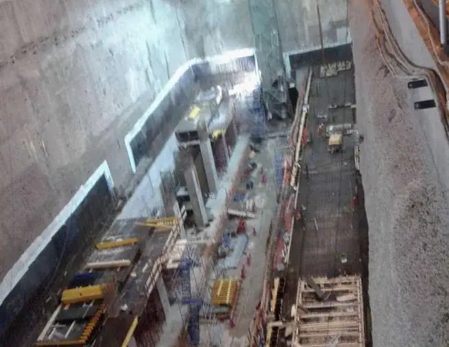

الأعمال الخرسانية
تنفيذ العناصر الخرسانية وأعمال الإنشاء وفق نطاق المشروع.
من أعمال الإنشاء والخرسانة إلى الهياكل الحديدية والتشطيبات والطرق؛ ننفذ نطاقات الأعمال بدقة ميدانية ومسؤولية مهنية.
منذ تأسيس أسود نجد في الرياض عام 2022، نعمل على تنفيذ مشاريع الإنشاءات والأعمال التخصصية، مع خبرات موثقة في مشاريع مترو الرياض وجاكس والدرعية.
نقدم خدمات الخرسانة، الهياكل المعدنية، التشطيبات، الطرق وتجهيز المواقع، ضمن نطاقات محددة للملاك والمقاولين الرئيسيين. ما يميز عملنا هو التركيز على تفاصيل التنفيذ، وتنظيم الموقع، وجودة التسليم.

خدمات متخصصة تخدم احتياجات المشاريع من الأعمال المدنية حتى التجهيز والتشطيبات.

ENGINEERED FOR EXECUTIONتنفيذ العناصر الخرسانية وأعمال الإنشاء وفق نطاق المشروع.
تنفيذ الهياكل المعدنية والأعمال الإنشائية الفولاذية.
تشطيبات داخلية وتجهيزات وتجديد للمرافق والمباني.
أعمال الطرق والتسويات والمسطحات الخارجية.
تنفيذ المساحات الخارجية وأعمال اللاندسكيب.
مجموعة مختارة من مشروعات أسود نجد، باستخدام صور التنفيذ الواردة في ملف الشركة.
الصور من ملف أعمال أسود نجد. بعض الأعمال نُفذت كمقاول باطن ضمن مشروعات لمقاولين رئيسيين. لم تُنشر صور المشروعات السرية.
ليست الجودة مرحلة أخيرة.
بل طريقتنا في كل مرحلة.

لكل مشروع متطلباته. نبدأ بتحديد نطاق التنفيذ، ثم ننسّق الموارد والأعمال ونراجع الجودة حتى التسليم.
مراجعة المتطلبات والمواصفات الفنية.
تنظيم مراحل التنفيذ والتنسيق الموقعي.
متابعة الأعمال والجودة والسلامة.
مراجعة الأعمال وإتمام التسليم.
نرحب بالتعاون مع المطورين والمقاولين الرئيسيين وملاك المشروعات في أعمال الإنشاء والتشطيبات والبنية التحتية.